Org Admin
Org Admin gives leaders a bird's-eye view of their organisation's groups activity. From here you can monitor engagement, track evangelism efforts, and manage every group in one place.
Tap the menu icon (≡) in the bottom-right corner of the app. In the menu, select Org Admin. This option is only visible to users with org-level admin permissions.
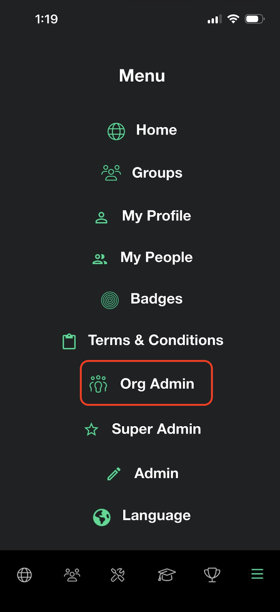
The dashboard gives you a real-time snapshot of your organisation. Active Groups and Active Members show current participation. Total AOEs (Acts of Evangelism) and People Added track outreach activity. Below that, the Acts of Evangelism breakdown shows exactly how members are sharing their faith — including Let's Plunge plays, testimonies, spiritual conversations, church event invites, and gospel media shares.
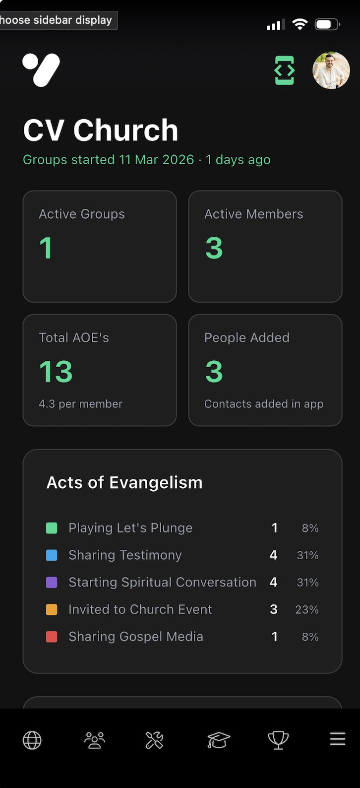
Scroll down past the dashboard to see all your groups listed. Tap the ⋮ icon on any group to reveal four options: View Details opens the group's stats page, Manage Members lets you add or remove people, Edit Group updates the group's name and settings, and Delete Group permanently removes it. You can also create a new group using the + Add Group button.
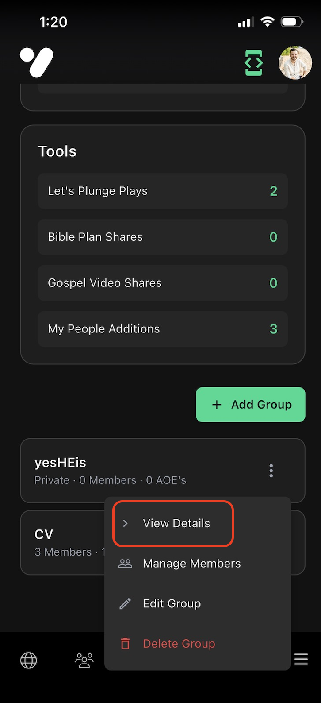
Tapping View Details on a group opens its full profile. The top cards show Active Members, Total AOEs, and People Added for that group specifically. The Learning & Growth section tracks how many Courses, Microlearnings, and Challenges members have completed. Use the Members tab to drill down into individual member activity.
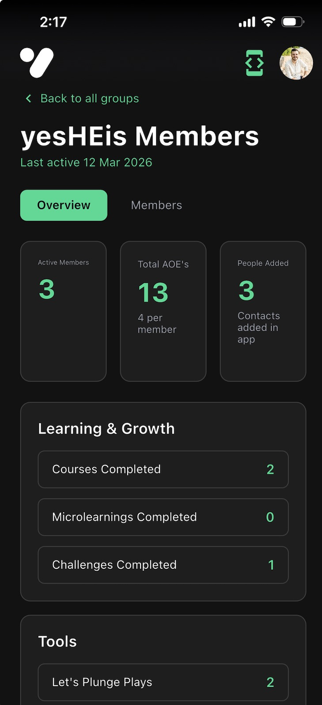
New Challenge
Challenges are a way for group leaders to rally their members around a shared activity — whether that's sharing their faith, inviting someone to church, or tackling a personal growth goal together. Here's how to create and publish one.
Inside your group, tap the trophy icon to open the Challenges tab. Any currently active challenges appear under Live Challenges. To create a new one, tap + Add a new Challenge.
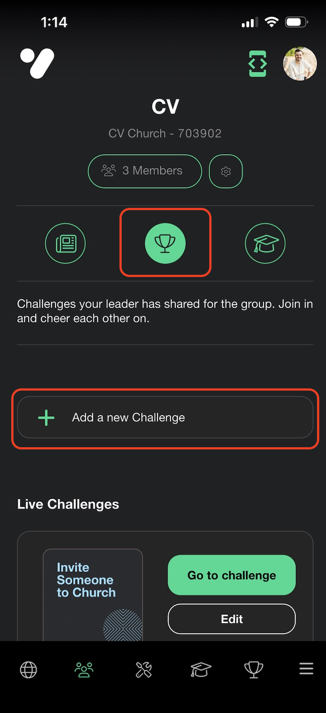
You'll see a list of pre-built challenges to choose from — such as Holy Spirit Challenge, Invite Someone to Church, and Overcome Your Fear. Tap one to select it; a description will appear below so you know what you're assigning to your group. Once you've chosen, move on to set a start date.
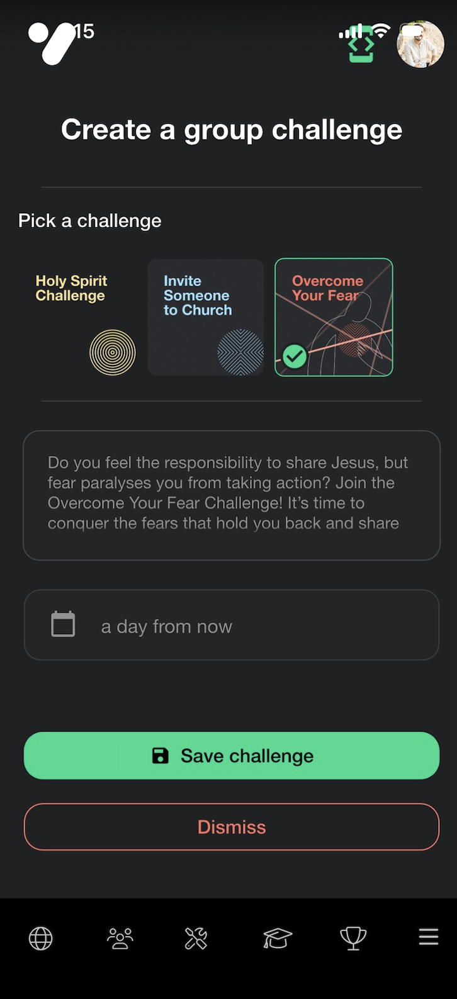
After selecting a challenge, tap the date field to set when the challenge will go live. By default it shows a day from now, but you can pick any future date. This lets you schedule challenges ahead of time so they launch at the right moment for your group.
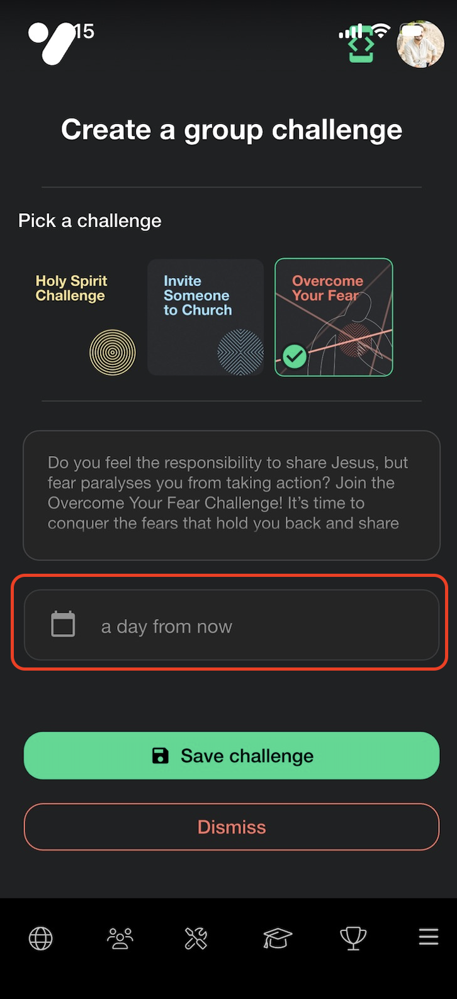
A calendar will appear. Tap the date you want the challenge to start, then tap Confirm. Use the arrows to navigate between months if needed.
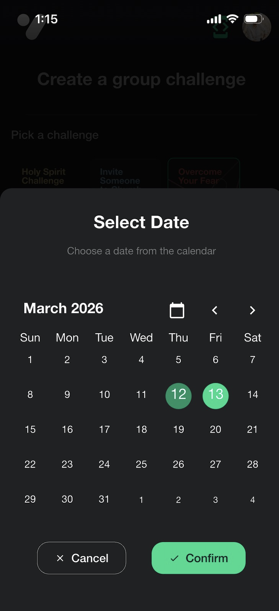
After saving, your challenge will appear under Queued Challenges with its scheduled start date shown. From here you can Edit it if you need to make changes, or tap Publish to make it visible to your group immediately — even before the scheduled date.
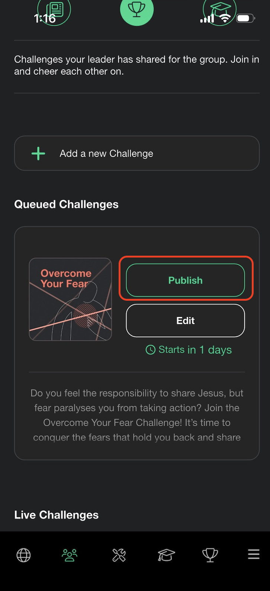
A confirmation dialog will appear asking if you're sure. Tap Publish to confirm — the challenge will immediately become visible to all members of the group. Members can then join in and cheer each other on from the Challenges tab.
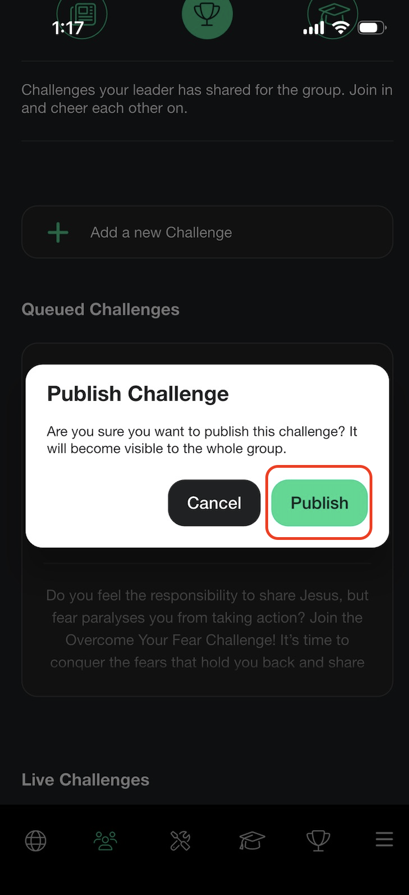
Pin a Course
Pinning a course lets group leaders curate content for their members — surfacing a specific course directly in the group so everyone can explore it together and discuss it at their next meeting.
Inside your group, tap the graduation cap icon to open the Courses tab. Any courses already pinned by the leader appear here for members to explore. To add one, tap + Add a Course. You can also add Micro Learnings using the button below it.
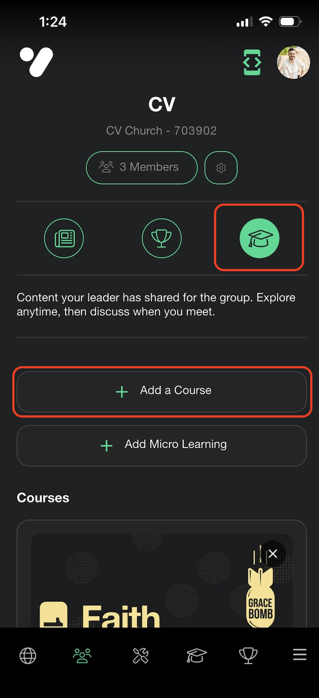
A course selection screen will appear. Browse the available courses and tap the one you want to assign — a checkmark will appear to confirm your selection. Then tap Pin course to add it to the group. Members will see it immediately in the Courses tab.
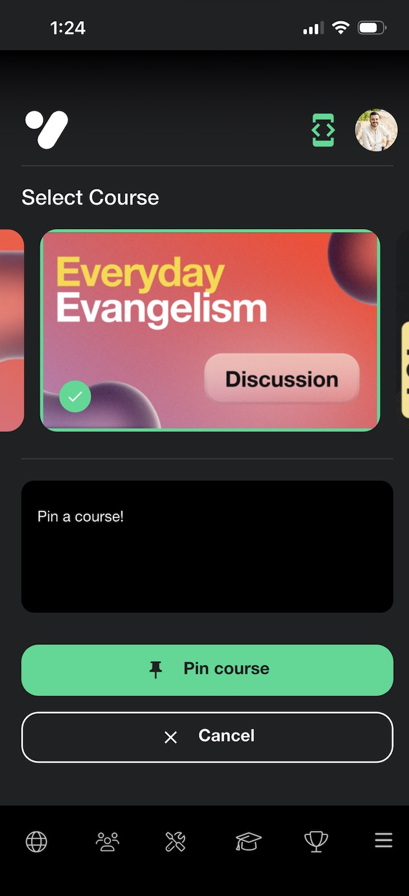